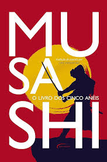
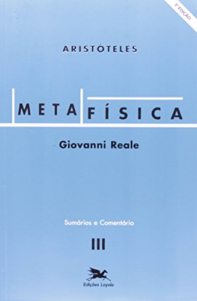
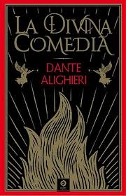

A leitura pode ser utilizada para aprender; de forma que, o leitor,
possa melhorar em sua carreira, evoluir intelectualmente, melhorar
o seu léxico, aumentar a produtividade durante o trabalho.
Muitos livros podem ser lidos por pessoas que habitam em grandes cidade e
por pessoas que moram na área rural.
Aqui estão alguns livros que podem ajudar toda a população no caminho
intelectual que a vida pede:

O Livro dos Cinco Anéis foi escrito em 1645, e trata sobre Kenjutsu e artes
marciais de um modo geral, mas todos seus ensinamentos se forem bem absorvidos
podem ser utilizados em outras áreas da vida, como no trabalho.

A Metafísica, de Aristóteles, é um livro denso de filosofia clássica, que, na idade média,
foi utilizado para obras de cunho religioso,como as obras de São Tomás de Aquino, contudo,
até os dias de hoje ela é reverenciada como uma das maiores obras da filosfia clássica

O Hobbit, obra de John Ronald Reuel Tolkien, mostra a jornada do herói na terra média, sendo
uma leitura obrigatória para toda a juventude. Com suas alusões católicas, a obra é um
excelente exemplo a ser seguido com a trajetória do personagem principal, a qual podem
ser retirados muitos ensinamentos

A Divina Comédia, texto clássico italiano, mostra a travessia do personagem principal, do
inferno ao céu. é escrito em versos, com uma leitura rica e extensa. Esta obra é
importantíssima para a formação intelectual e é o melhor exemplo de livro clássico
da península itálica.